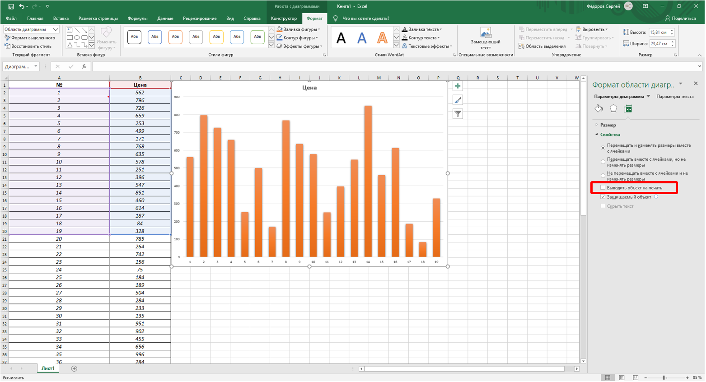
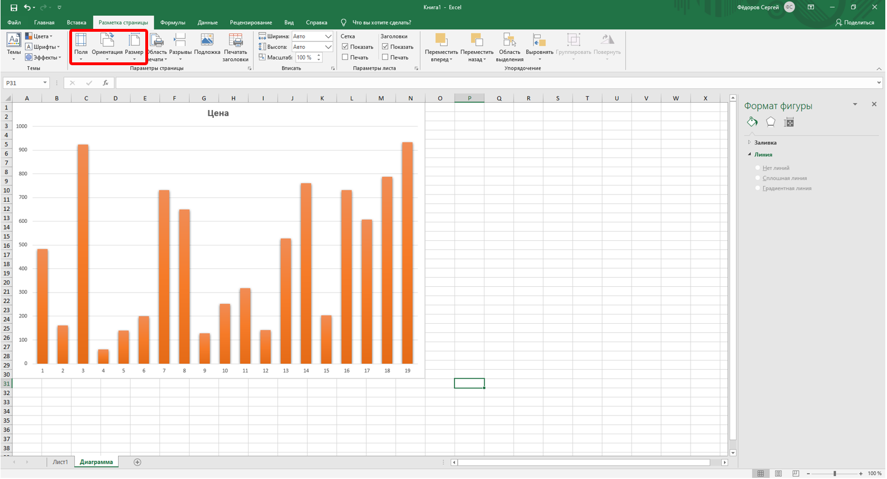
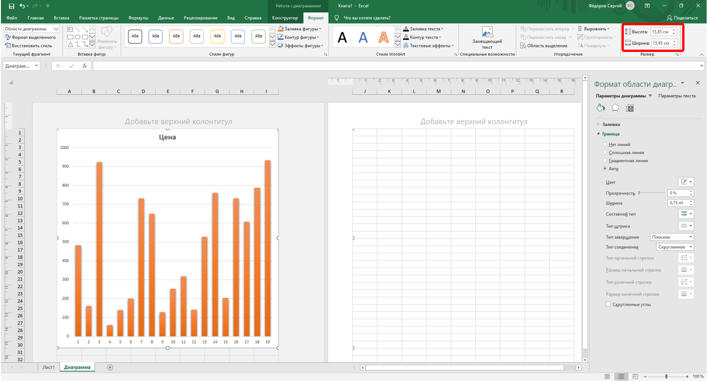

О печати диаграмм
Диаграмма, расположенная на отдельном листе, всегда печатается на отдельной странице.
Диаграмма, размещенная на листе с данными, может быть напечатана вместе с данными листа или на отдельной странице. Для того чтобы диаграмма была напечатана вместе с данными листа, необходимо на листе выделить любую ячейку за пределами диаграммы. Для того чтобы диаграмма была напечатана на отдельной странице, диаграмму или любой ее элемент необходимо выделить.
По умолчанию диаграмма, расположенная на листе с данными, печатается вместе с ними.
Для того чтобы диаграмма не печаталась вместе с данными щелкните значок группы Размер вкладки Работа с диаграммами/Формат и во вкладке Свойства окна Размер и свойства (рис. 15.19) следует снять флажок Выводить объект на печать. При этом отдельно выделенную диаграмму по-прежнему можно напечатать.

Рис. 15.19. Отказ от печати диаграммы вместе с данными листа
Для печати диаграммы в одном экземпляре достаточно в меню кнопки Меню (см. рис. 15.2) во вкладке Печать выбрать команду Печать. Однако, как и при печати листов с данными, не рекомендуется сразу печатать диаграмму. В большинстве случаев диаграмма перед печатью требует определенной настройки.
Параметры печати диаграммы можно изменить только в том случае, если она печатается на отдельной странице.
Если диаграмма печатается вместе с данными листа, отдельно от листа настроить для нее параметры печати невозможно.
Настройка параметров страницы диаграммы
Для выбора и установки параметров страницы диаграммы используют элементы группы Параметры страницы вкладки Разметка страницы (рис. 15.20).

Рис. 15.20. Настройка параметров страницы диаграммы
Так же, как и при настройке параметров страницы для печати таблиц, можно выбрать размер и ориентацию страницы, выбрать или установить размер полей страницы.
Для диаграмм, расположенных на отдельном листе, изменение ориентации страницы приведет и к изменению ориентации листа, на котором расположена диаграмма, а также может привести к изменению размеров диаграммы. Изменение ориентации страницы не влияет на отображение на листе диаграммы, расположенной на листе с данными.
Нельзя напечатать диаграмму на нескольких страницах, даже если при просмотре разметки страницы растянуть её на несколько страниц. По умолчанию диаграмма будет занимать страницу целиком. Однако, можно изменить размер самой диаграммы в счетчиках группы Размер контекстной вкладки Работа с диаграммами/Формат (рис. 15.21).

Рис. 15.21. Изменение размера диаграммы